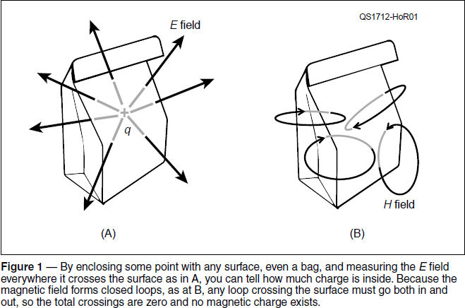
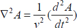
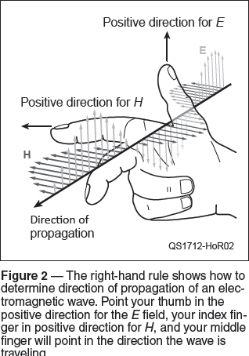

Experiment #179 — Maxwell’s Equations — The Wave Emerges
Using the mathematical equations of divergence, gradient, and curl from last month, let’s find out where radio waves come from.1
Maxwell’s first equation, also known as Gauss’ law for electric fields (∇•E = qV/ε0), tells us that if we measure where an electric field is pointing and how strong it is (the E-field’s divergence or ∇•E) all around some arbitrary point, then we can tell how much electric charge, qV, is at that point. In a very oversimplified way, we can think of the electric field’s divergence as mapping out a distortion of otherwise-neutral space. Multiplying the distortion by permittivity, ε0, the “electric stretchiness” of space, tells us the amount of charge, qV, it takes to produce that distortion.
In more visual terms, you can “put a bag” around a point as in Figure 1A, add up the electric field everywhere it crosses the surface of that bag, and deduce how much electric charge must be inside the bag. There must be an equivalent magnetic charge that produces its own type of distortion we experience as, H, the magnetic field, right? No.

Maxwell’s second equation, also known as Gauss’ law for magnetic fields (∇•H/μ0 = 0), tells us there can never be any “magnetic charge” inside the bag. Where the electric field can be visualized as field lines from an electric charge streaming off into space, the equivalent lines of the magnetic field are all closed loops with no beginning or end. Every loop crossing the bag’s surface both enters and leaves, so the net total is always zero, as in Figure 1B. (If the loop is completely inside or outside the bag, it isn’t counted.)
Magnetism — Charge in Motion
If there are no magnetic charges, what generates a magnetic field? This is where Maxwell’s addition to Ampere’s law, his fourth equation, comes in. It has two terms on the right-hand side: I + m0(dE/dt). The first is current, I, which is moving charge, at the point where the magnetic field is created. The second is the rate at which the electric field at that point is changing multiplied by permittivity. To add these two quantities together, they have to be of the same type with the same units. The first term is unambiguous — it’s current — so the second quantity must also be current, or at least something equivalent to current. Maxwell called this term displacement current.
Displacement current comes from a time-changing electric field — how can that be created? Maxwell’s third equation (Faraday’s law) says that a time-changing magnetic field will do the job, but we’re trying to create the magnetic field in the first place. According to the four equations, the only other way is to change the amount of electric charge at the point where we’re trying to create the field.
Regarding the change in the amount of charge in our “bag of charge,” the Law of Conservation of Charge is pretty clear — charge cannot be created or destroyed. If I want to change the amount of charge, I have to move some charge into or out of the bag, and moving charge is current. To shorten a really long story, the only way to create a time-changing electric field is by moving or displacing charge, which is current. That’s how the electric field in a capacitor is created, by moving electrons off one electrode and onto the other. What we have just learned is that magnetic fields are the effect of electric charge in motion.
The Wave Equation
We’re not quite there yet. We need one more equation. (Serious students of electromagnetism will want to dive into Fleisch’s book on Maxwell’s equations.2) The equation below is the ideal wave equation3 (without loss or non-linearities), and it describes all waves:

Let’s break this into digestible pieces. A is whatever field in which the wave is created. We use E or H fields for radio waves. The right-hand side’s first term (1/v2) is just the reciprocal of the velocity of the wave squared. In the second term, the superscript “2” above the d and t means “do this twice,” not “squared.” If the rate of change of our field is dA/dt, then d2A/dt2 means “the rate of change of the rate of change.” (For example, acceleration is the rate of change of velocity which is the rate of change of position. Hold that thought.) The intimidating term on the left (∇2A) describes how the gradient of the field in all three dimensions is changing — the gradient of the gradient, basically.
Reading from right to left, what the equation tells us is, Changes in the rate at which the field A varies, create changes in the field’s strength throughout space. The changes are inversely proportional to the speed at which the changes propagate. Solutions to that equation, such as sine waves, describe wave motion, whether as a plucked string, a ripple across water, or a radio wave in space.
Coupling E and H
The left-hand side of Maxwell’s third and fourth equations don’t describe the E and H fields directly. They give us the curl of the fields (∇×E and ∇×H). I don’t have room to show the complete process (it’s in Fleisch’s book), but with two mathematical tools (Stoke’s theorem and the divergence theorem), we can get from the third and fourth equations to a wave equation that replaces A in the wave equation with E or μ0H.4, 5
We are really close now — take three big steps then one final leap. Step 1: Equations three and four show that time-changing E and H fields generate each other (and if you follow the vector math for waves, E and H are at right angles in free space, as shown in Figure 2).

Step 2: The only way to get those time-changing fields is to move charge — change its position with time — and the only way for that right-hand term in the wave equation to not be zero is for the charge to be accelerating (or decelerating).
Step 3: Motion is a change in position relative to an observer (i.e., me), so the resulting changes in the fields also appear to be moving from the perspective of the observer.
And here we are, at last: The wave equation describes those changing fields, and we have our electromagnetic radio waves, generated by accelerating and decelerating charge, better known as ac current.
The coupling of the electric and magnetic fields creating each other explains why an electromagnetic wave is more than just an electric field and a magnetic field that just happen to be at the same place and just happen to be at right angles. They aren’t separate things at all. The E and H fields are two aspects of the same thing — an electromagnetic wave moving through space.6
Even with all the math, we’re still not all that clear on what’s really going on. From Jim Rautio, AJ3K:
We talk about electric fields and magnetic fields as though they are real. Sure, you have seen iron filings move around, but no one has ever seen or touched a field. Like lines of force, fields are just a mathematical convenience that allows us to predict what happens when we do an experiment.7
Nor does anyone know what a photon or electrical charge actually is. We just know how to observe their effect on the space we live in.
Having completed our journey through the Land of Maxwell, this is a great place to end “Hands-On Radio” — at the headwaters of all radio waves, whose magic is at the heart of ham radio and the people who enjoy it. 73!
Notes
1All previous “Hands-On Radio” experiments are available to ARRL members at www.arrl.org/hands-on-radio.
2D. Fleisch, The Student’s Guide to Maxwell’s Equations, Cambridge University Press, 2008.
3The correct form uses partial differentials, δ, but for simplicity, the simple derivative symbol is used here. A full discussion of the wave equation is well beyond the scope of this overview.
4The relationship between B and H is explained at www.physicsforums.com/threads/in-magnetism-what-is-the-difference-between-the-b-and-h-fields.370525.
5It was not lost on Maxwell that the same process also shows v, the wave’s velocity, is equal to 1/√e0m0, which just happens to also be c, the speed of light.
6See the electromagnetic wave animation at commons.wikimedia.org/wiki/File:EM-Wave.gif.
7J. Rautio, AJ3K, “The Long Road to Maxwell’s Equations,” Dec. 2014, IEEE Spectrum, pp. 36 – 40, 54 – 56, and www.microwaves101.com/encyclopedias/maxwell-s-equations.
{kind=link}